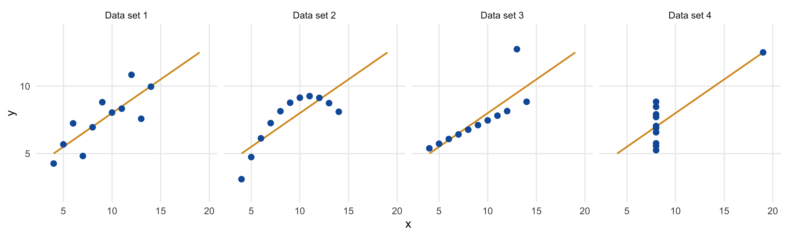
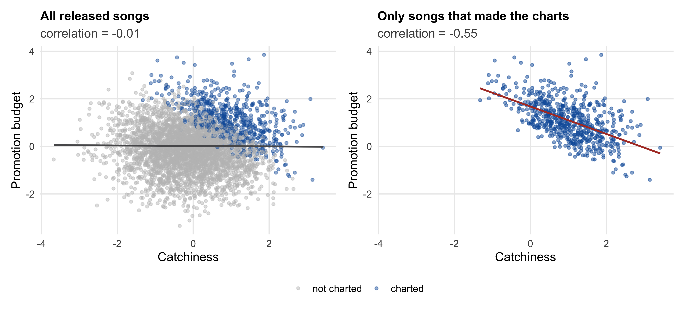
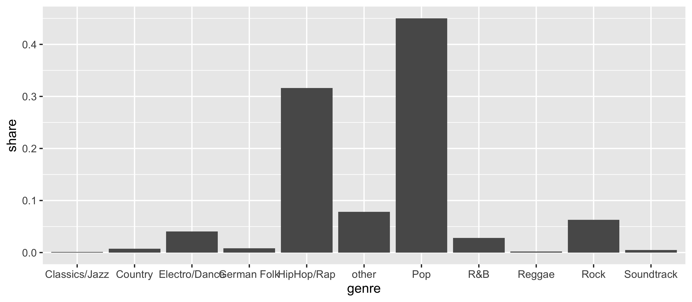
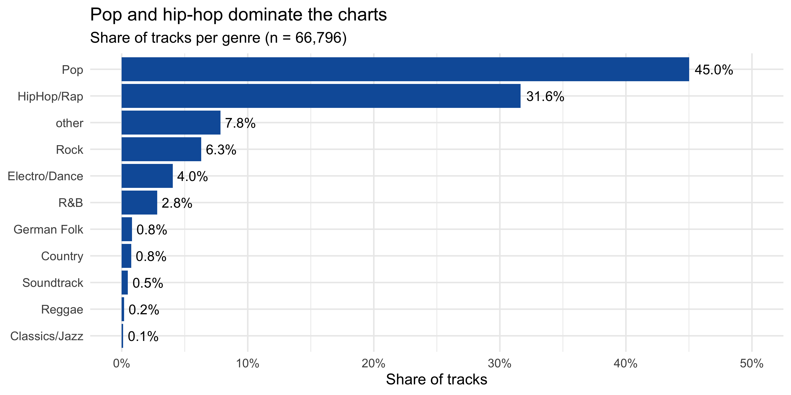
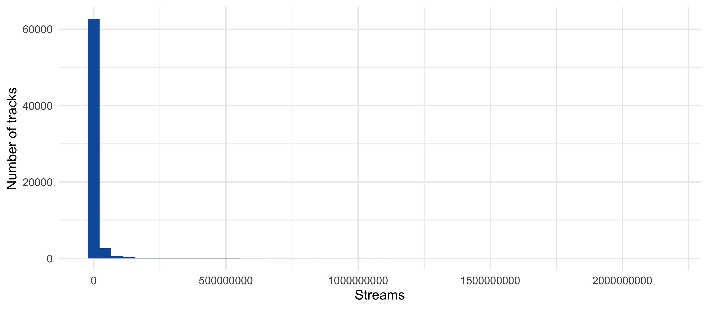
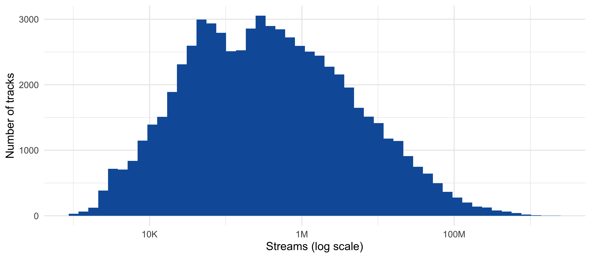
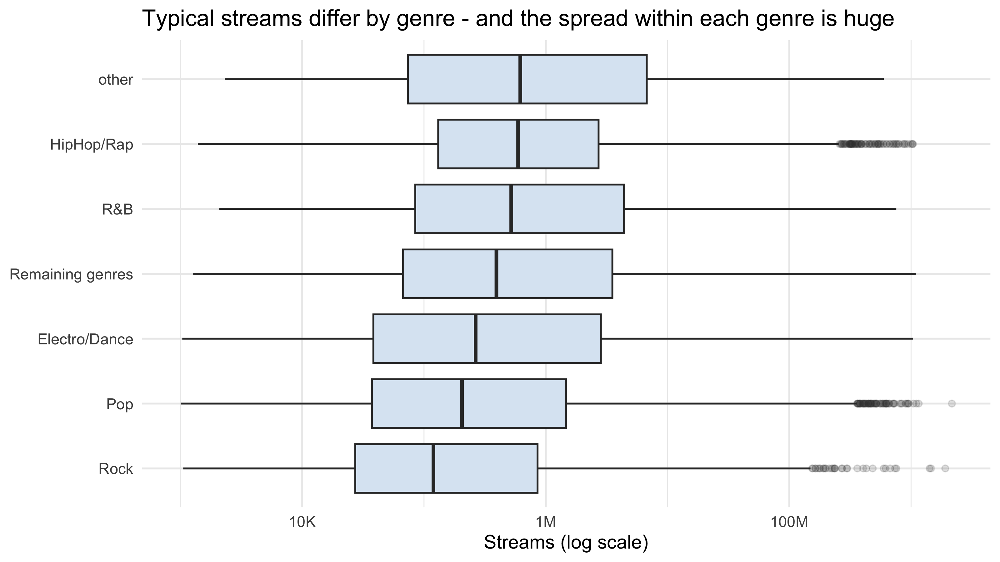
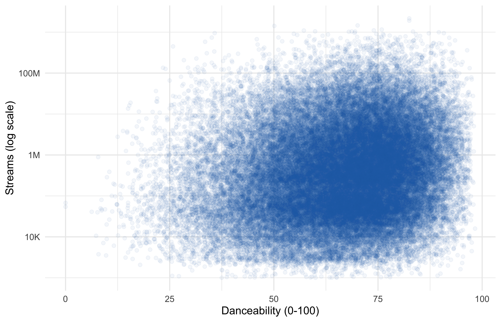
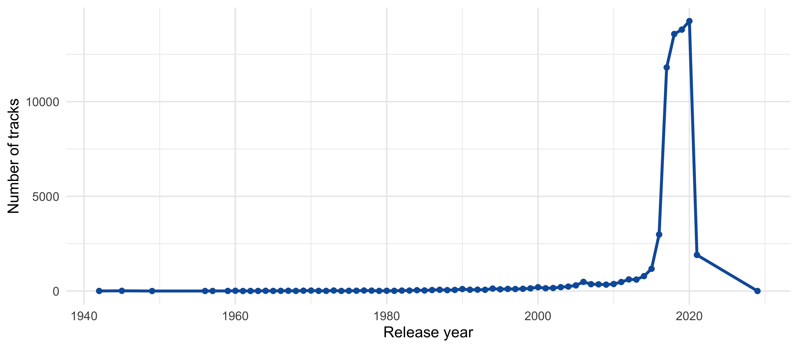
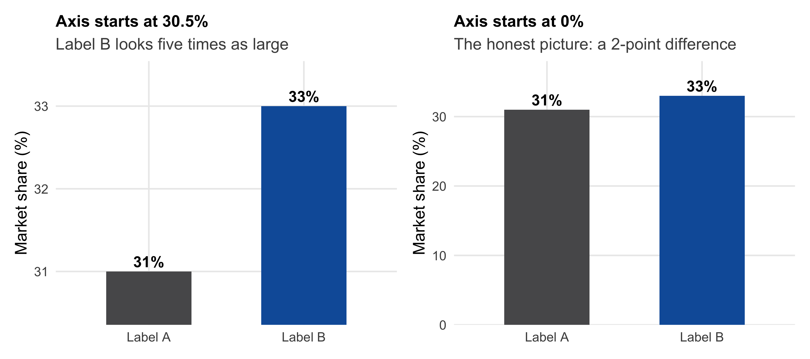

| Mean of x | Mean of y | SD of x | SD of y | Correlation | |
|---|---|---|---|---|---|
| Data set 1 | 9 | 7.5 | 3.32 | 2.03 | 0.82 |
| Data set 2 | 9 | 7.5 | 3.32 | 2.03 | 0.82 |
| Data set 3 | 9 | 7.5 | 3.32 | 2.03 | 0.82 |
| Data set 4 | 9 | 7.5 | 3.32 | 2.03 | 0.82 |
2 Describing Data
Driving question: What is going on?
In Chapter 1, we distinguished four kinds of questions that analytics can answer. This chapter is about the first one — the descriptive question what is going on? — and about the practical skills that every analysis rests on: getting data into R, understanding what each variable measures, handling and cleaning the data, and summarizing and visualizing it honestly. After working through this chapter you will be able to:
- Import data files correctly — and recognize when an import has gone silently wrong
- Classify variables by their level of measurement and choose summaries and charts accordingly
- Use the core verbs of data handling in R to filter, select, transform, group, and combine data
- Check a data set systematically for problems before you trust it — including the question of how the data came to be
- Summarize categorical and continuous variables, overall and by group
- Build charts with
ggplot2, choose the chart type that fits your variables, and avoid misleading visualizations - Report descriptive findings precisely — without claiming more than a description can support
The chapter assumes that you have completed the R onboarding module. All code is shown; run it along in your own RStudio Project.
2.1 Motivation: a first conversation with your data
Imagine you have just joined the data team of a record label. On your first day, the head of A&R hands you a data set of tracks from the streaming charts and asks a simple question: “What is going on in the charts?” Which genres dominate? How concentrated is success? What distinguishes the hits from the rest?
It is tempting to jump straight to a model — a regression of streams on everything in the data. Resist the temptation. Every serious analysis starts with a conversation with the data: looking at what is in it, how it is distributed, where it is strange. There are two reasons. First, descriptive questions are managerially important in their own right: segment sizes, market shares, and funnel drop-offs are the everyday currency of marketing decisions. Second, description is where problems are caught — import errors, impossible values, duplicates, and quirks of how the data were collected. A model estimated on data you have not looked at inherits all of them silently.
2.1.1 Summary statistics are not enough
A classic example makes the point. Figure 2.1 shows four small data sets constructed by the statistician Francis Anscombe (1973). Their summary statistics are identical to two decimal places (Table 2.1): same means, same standard deviations, same correlation, and — as the orange lines show — the same regression line.

Yet the pictures could hardly be more different. Data set 1 shows a noisy linear relationship; data set 2 a perfect curve; data set 3 a perfect line distorted by one outlier; in data set 4, a single observation creates the entire “relationship”. Four different stories — which no table of summary statistics would have revealed. Summaries compress; pictures reveal. A good descriptive analysis always uses both.
2.1.2 What description can — and cannot — do
Recall from Section 1.3 that description answers what is going on? — not what happens if we act?. A descriptive finding such as “tracks from the major labels have more streams” is a statement about the data, not about the effect of signing with a major label. This does not make description second-class: it is the foundation every other question builds on. But it means that the language of a descriptive finding must stay descriptive. We return to this in Section 2.8.
2.1.3 The data: tracks in the streaming charts
Throughout this chapter, we work with one data set: almost 67,000 tracks that appeared in the Spotify charts, together with their chart performance, audio characteristics, social media metrics, and label information. Table 2.2 lists the variables.
| Variable(s) | Description |
|---|---|
isrc |
International Standard Recording Code — an identifier for a recording |
artist_id, artistName, trackName |
Identifiers and names of artist and track |
streams |
Number of streams |
weeks_in_charts, n_regions |
Number of weeks in the charts; number of regions in whose charts the track appeared |
danceability, energy, speechiness, instrumentalness, liveness, valence |
Audio characteristics, each on a scale from 0 to 100 |
tempo, song_length, song_age |
Tempo (beats per minute), length (minutes), age of the track (weeks) |
explicit, top10 |
Explicit lyrics (1 = yes); track reached the top 10 (1 = yes) |
n_playlists, sp_popularity |
Number of playlists featuring the track; Spotify popularity score (0–100) |
youtube_views, tiktok_counts, shazam_counts |
Views, uses, and searches on other platforms |
ins_followers_artist, monthly_listeners_artist, playlist_total_reach_artist, sp_fans_artist |
Artist-level reach metrics |
release_date, genre, label |
Release date, genre, and record label |
expert_rating |
Rating of the track by music experts (poor – fair – good – excellent – masterpiece) |
2.2 Getting data into R
2.2.1 Reading a text file
Most data you will encounter in marketing come as text files in which each line is one row and the values are separated by a delimiter — most commonly .csv files (“comma-separated values”). Let us load the music data, which is stored in the course repository:
library(tidyverse)
music_url <- "https://raw.githubusercontent.com/WU-RDS/MA2025/main/data/music_data_fin.csv"
music_data <- read_csv2(music_url)Why read_csv2() and not read_csv()? Because “comma-separated” is a misnomer in much of Europe. In German-speaking countries, the comma is the decimal separator (3,14), so it cannot also separate the columns — European software therefore writes files with semicolons between the values and commas as decimal marks. read_csv() expects the international convention (commas between values, points as decimal marks); read_csv2() expects the European one. Look at what happens with the wrong function:
wrong_import <- read_csv(music_url)
dim(wrong_import)[1] 66780 1R did not complain — it simply read each entire line into a single column. Other versions of this error are far less visible: a file read with the wrong decimal convention may turn 3,14 into 314 without any warning. The lesson: an import that runs without errors is not necessarily correct. Always inspect the data immediately after importing them. If in doubt, look at the raw file first with readLines(music_url, n = 3).
2.2.2 A first look
Four functions give you a first overview:
dim(music_data) # number of rows and columns[1] 66796 31glimpse(music_data) # every column: name, type, first valuesRows: 66,796
Columns: 31
$ isrc <chr> "BRRGE1603547", "USUM71808193", "ES5701800…
$ artist_id <dbl> 3679, 5239, 776407, 433730, 526471, 1939, …
$ streams <dbl> 11944813, 8934097, 38835, 46766, 2930573, …
$ weeks_in_charts <dbl> 141, 51, 1, 1, 7, 226, 13, 1, 64, 7, 12, 8…
$ n_regions <dbl> 1, 21, 1, 1, 4, 8, 1, 1, 5, 1, 1, 7, 1, 1,…
$ danceability <dbl> 50.9, 35.3, 68.3, 70.4, 84.2, 35.2, 73.0, …
$ energy <dbl> 80.3, 75.5, 67.6, 56.8, 57.8, 91.1, 69.6, …
$ speechiness <dbl> 4.00, 73.30, 14.70, 26.80, 13.80, 7.47, 35…
$ instrumentalness <dbl> 0.050000, 0.000000, 0.000000, 0.000253, 0.…
$ liveness <dbl> 46.30, 39.00, 7.26, 8.91, 22.80, 9.95, 32.…
$ valence <dbl> 65.1, 43.7, 43.4, 49.5, 19.0, 23.6, 58.4, …
$ tempo <dbl> 166.018, 191.153, 98.992, 91.007, 74.496, …
$ song_length <dbl> 3.118650, 3.228000, 3.015550, 3.453417, 3.…
$ song_age <dbl> 228.285714, 144.285714, 112.285714, 50.714…
$ explicit <dbl> 0, 0, 0, 0, 0, 0, 0, 0, 1, 0, 0, 0, 0, 0, …
$ n_playlists <dbl> 450, 768, 48, 6, 475, 20591, 6, 105, 547, …
$ sp_popularity <dbl> 51, 54, 32, 44, 52, 81, 44, 8, 59, 68, 24,…
$ youtube_views <dbl> 145030723, 13188411, 6116639, 0, 0, 202160…
$ tiktok_counts <dbl> 9740, 358700, 0, 13, 515, 67300, 0, 0, 653…
$ ins_followers_artist <dbl> 29613108, 3693566, 623778, 81601, 11962358…
$ monthly_listeners_artist <dbl> 4133393, 18367363, 888273, 143761, 1555187…
$ playlist_total_reach_artist <dbl> 24286416, 143384531, 4846378, 156521, 9084…
$ sp_fans_artist <dbl> 3308630, 465412, 23846, 1294, 380204, 1651…
$ shazam_counts <dbl> 73100, 588550, 0, 0, 55482, 5281161, 0, 0,…
$ artistName <chr> "Luan Santana", "Alessia Cara", "Ana Guerr…
$ trackName <chr> "Eu, Você, O Mar e Ela", "Growing Pains", …
$ release_date <date> 2016-06-20, 2018-06-14, 2018-04-26, 2020-…
$ genre <chr> "other", "Pop", "Pop", "HipHop/Rap", "HipH…
$ label <chr> "Independent", "Universal Music", "Univers…
$ top10 <dbl> 1, 0, 0, 0, 0, 1, 0, 0, 0, 0, 0, 0, 0, 0, …
$ expert_rating <chr> "excellent", "good", "good", "poor", "exce…glimpse() is the single most useful function after an import: it shows at a glance whether the number of columns is plausible, whether numbers were read as numbers (<dbl>), text as text (<chr>), and dates as dates (<date>). head(music_data) shows the first rows, and summary() gives a quick numerical overview of selected variables:
summary(select(music_data, streams, danceability, song_length)) streams danceability song_length
Min. : 1003 Min. : 0.00 Min. : 0.01667
1st Qu.: 55760 1st Qu.:56.80 1st Qu.: 2.92925
Median : 333336 Median :68.00 Median : 3.33978
Mean : 7314674 Mean :66.32 Mean : 3.43116
3rd Qu.: 2181086 3rd Qu.:77.20 3rd Qu.: 3.81987
Max. :2165692479 Max. :98.30 Max. :29.78383 Look at streams: the mean is more than twenty times the median. We will see in Section 2.6 what this tells us.
2.2.3 Other file formats
The same logic applies to other formats — only the function differs:
| Format | Package | Function |
|---|---|---|
CSV, international convention (, and .) |
readr (tidyverse) | read_csv("file.csv") |
CSV, European convention (; and ,) |
readr (tidyverse) | read_csv2("file.csv") |
| Other delimiters (e.g., tab) | readr (tidyverse) | read_delim("file.txt", delim = "\t") |
| Excel | readxl | read_excel("file.xlsx", sheet = "Sheet1") |
| SPSS | haven | read_sav("file.sav") |
| Stata | haven | read_dta("file.dta") |
| Qualtrics survey export | qualtRics | read_survey("file.csv") — see the group project appendix |
Files stored on your computer are read by their path relative to your RStudio Project — e.g., read_excel("data/survey.xlsx") if the file is in the project’s data folder. Writing data works analogously: write_csv(music_data, "data/music_clean.csv").
NoteUnder the hood: data from the web
Data do not always come as files. Two further sources are common in marketing analytics:
- Web scraping reads information directly from web pages. The
rvestpackage reads a page withread_html()and extracts tables withhtml_table(). Scraped data almost always need cleaning (numbers stored as text with thousands separators, footnote markers, etc.) — and before scraping, check the website’s terms of use. - APIs (application programming interfaces) are interfaces through which web services deliver data in a structured format, usually JSON. The
jsonlitepackage reads JSON withfromJSON(); for many services (e.g., Google Trends viagtrendsR), dedicated R packages wrap the API in convenient functions.
library(jsonlite)
# Population of Austria from the World Bank API
url <- "https://api.worldbank.org/v2/countries/AT/indicators/SP.POP.TOTL?date=2000:2020&format=json"
population <- fromJSON(url)[[2]]
head(population[, c("date", "value")])2.2.4 What is a row? Tidy data and the unit of observation
Before any analysis, answer one question explicitly: what does one row represent? This is the unit of observation — the data counterpart of the unit of analysis in the research-design template of Section 1.8. Here, the answer seems obvious: one row is one track. Data organized this way are called tidy (Wickham 2014):
- Each variable is a column.
- Each observation is a row.
- Each value is a cell.
Data that violate these rules — e.g., a spreadsheet with one column per month of sales, or several values packed into one cell — can be analyzed, but must usually be reshaped first. Whether “one row = one track” really holds in our data is a question we will check in Section 2.5.
2.3 Variables and levels of measurement
2.3.1 Four levels of measurement
Not every number is a quantity. The music data contain a variable artist_id that is stored as a number — but the mean artist ID is as meaningless as the mean telephone number. What you can sensibly do with a variable depends on its level of measurement (Table 2.3).
| Level | What the values express | Example in the music data | Meaningful operations | Typical summary |
|---|---|---|---|---|
| Nominal | Categories without order | genre, label, artist_id |
Count, equal / not equal | Frequencies, mode |
| Ordinal | Ordered categories; distances unknown | expert_rating (poor < fair < … < masterpiece) |
+ order: greater / less | Frequencies, median, quantiles |
| Interval | Equal distances, arbitrary zero point | Temperature in °C; release year | + differences | Mean, standard deviation |
| Ratio | Equal distances, natural zero point | streams, song_length, prices |
+ ratios (“twice as many”) | Mean, standard deviation, coefficient of variation |
Nominal and ordinal variables are called categorical; interval and ratio variables are continuous (or metric). Each level inherits the operations of the levels above it. The distinction matters for everything that follows: it determines which summary statistics are meaningful, which charts fit, and — from Module 4 onward — which statistical tests apply.
Two cases require judgment. Rating scales (e.g., “How much do you like this song? 1–7”) are strictly ordinal — nobody guarantees that the step from 1 to 2 equals the step from 6 to 7 — but are in practice often treated as interval scales when they have enough points. And binary variables coded 0/1 (like explicit) are nominal, but have a convenient property: their mean is the share of 1s.
2.3.2 From levels of measurement to R types
R does not know the level of measurement of a variable — you have to tell it, by choosing the right type (see the R onboarding):
| Level | R type | How to create it |
|---|---|---|
| Nominal | factor |
factor(x) or as.factor(x) |
| Ordinal | ordered factor |
factor(x, levels = c(...), ordered = TRUE) |
| Interval / ratio | numeric |
as.numeric(x) |
At the moment, genre, label, and expert_rating are stored as text (<chr>), and explicit, top10, and artist_id as numbers. Let us fix this:
music_data <- music_data |>
mutate(
genre = as.factor(genre),
label = as.factor(label),
explicit = factor(explicit, levels = c(0, 1), labels = c("not explicit", "explicit")),
top10 = factor(top10, levels = c(0, 1), labels = c("no", "yes")),
artist_id = as.character(artist_id),
expert_rating = factor(expert_rating,
levels = c("poor", "fair", "good", "excellent", "masterpiece"),
ordered = TRUE)
)(The mutate() function and the pipe |> are introduced in Section 2.4; for now, read the code as “take music_data, then change these columns”.) Why does this matter? As text, R would sort the categories alphabetically — excellent, fair, good, masterpiece, poor. As an ordered factor, they appear in their meaningful order:
table(music_data$expert_rating)
poor fair good excellent masterpiece
5356 13418 23243 23376 1403 And because the factor is ordered, R now knows that “good” lies between “fair” and “excellent”. This allows a meaningful median of an ordinal variable — the category of the middle observation:
median_position <- ceiling(nrow(music_data) / 2)
sort(music_data$expert_rating)[median_position][1] good
Levels: poor < fair < good < excellent < masterpiece2.4 Data handling
Raw data rarely come in exactly the form an analysis needs. Data handling (or data wrangling) comprises the operations that get them there. The dplyr package (part of the tidyverse) provides one function — a “verb” — for each of the core operations (Table 2.4).
| Verb | What it does | Example question |
|---|---|---|
filter() |
Keeps the rows that meet a condition | Which tracks are pop tracks with more than 10 million streams? |
select() |
Keeps (or drops) columns | Show only artist, title, and streams |
arrange() |
Sorts rows | Which are the most-streamed tracks? |
mutate() |
Creates or changes columns | Streams in millions? Release year? |
rename() |
Renames columns | artistName → artist |
summarise() |
Condenses many rows into one summary row | What is the median number of streams? |
group_by() |
Makes all following operations work per group | … per genre? per label? |
count() |
Counts rows (per group) | How many tracks per genre? |
left_join() |
Combines two tables via a shared key | Add information about the labels |
All verbs share the same logic: the first argument is a data frame, the following arguments describe what to do (using the column names directly, without quotation marks), and the result is again a data frame.
2.4.1 Choosing rows and columns
# Rows: pop tracks with more than 10 million streams
big_pop <- filter(music_data, genre == "Pop", streams > 10000000)
nrow(big_pop)[1] 2562Conditions use == (equal — note the double equals sign), != (not equal), >, <, >=, <=, and %in% (is one of): filter(music_data, label %in% c("Sony Music", "Warner Music")). Several conditions separated by commas must all hold; | means “or”.
# Columns: keep only a few
select(big_pop, artistName, trackName, streams) |> head(3)# A tibble: 3 × 3
artistName trackName streams
<chr> <chr> <dbl>
1 Einár feat. Dizzy Härifrån 10351676
2 Morgan Sulele feat. OnklP Helt Ærlig 12999650
3 Aitana feat. Morat Más De Lo Que Aposté 192503742.4.2 The pipe: chaining steps
Analyses usually consist of several steps in sequence. The pipe |> passes the result of one step on as the first argument of the next, so code can be read from top to bottom as a sequence of “and then”:
music_data |> # take the music data, then
filter(genre == "Pop") |> # keep the pop tracks, then
arrange(desc(streams)) |> # sort by streams (descending), then
select(artistName, trackName, streams) |> # keep three columns, then
head(5) # show the first five rows# A tibble: 5 × 3
artistName trackName streams
<chr> <chr> <dbl>
1 Ed Sheeran Shape of You 2165692479
2 Shawn Mendes feat. Camila Cabello Señorita 1156206588
3 XXXTENTACION SAD! 1103693478
4 Ed Sheeran Perfect 1045189446
5 Luis Fonsi feat. Daddy Yankee feat. Justin Bieber Despacito - Remix 956567836You will also see the older pipe %>% from the magrittr package in tutorials and AI-generated code; for our purposes, the two are interchangeable.
2.4.3 Creating and changing variables
mutate() adds new columns (or overwrites existing ones), computed from existing ones:
music_data <- music_data |>
mutate(
streams_mio = streams / 1e6, # streams in millions
release_year = as.integer(format(release_date, "%Y")), # year from the date
log_streams = log10(streams) # log scale (see below)
) |>
rename(artist = artistName, track = trackName)Categorical variables often need recoding — e.g., merging rare categories. The forcats package (part of the tidyverse) helps: fct_lump_n(genre, n = 5) keeps the five most frequent genres and merges all others into “Other”.
2.4.4 Summaries by group
The combination of group_by() and summarise() is the workhorse of descriptive analysis — it answers every question of the form “… per …”:
music_data |>
group_by(label) |>
summarise(
n_tracks = n(),
median_streams = median(streams),
share_top10 = mean(top10 == "yes")
)# A tibble: 4 × 4
label n_tracks median_streams share_top10
<fct> <int> <dbl> <dbl>
1 Independent 22570 238884 0.0793
2 Sony Music 12390 355898. 0.113
3 Universal Music 21632 434943 0.113
4 Warner Music 10204 347152. 0.102 count() is a shortcut for the most frequent case — counting rows per group:
music_data |> count(genre, sort = TRUE) |> head(5)# A tibble: 5 × 2
genre n
<fct> <int>
1 Pop 30069
2 HipHop/Rap 21131
3 other 5228
4 Rock 4214
5 Electro/Dance 27032.4.5 Combining tables
Information often sits in several tables that share a key — e.g., a customer ID in the transaction data and in the CRM data. left_join() adds the columns of a second table to the first, matching rows by the key. Suppose a colleague maintains a small table that classifies the labels:
label_info <- tibble(
label = c("Universal Music", "Sony Music", "Warner Music", "Independent"),
label_type = c("Major", "Major", "Major", "Independent")
)
music_data <- music_data |>
left_join(label_info, by = "label")
music_data |> count(label_type)# A tibble: 2 × 2
label_type n
<chr> <int>
1 Independent 22570
2 Major 44226“Left” means: all rows of the left table (music_data) are kept; rows without a match in the right table get missing values (NA) in the new columns. Always check the number of rows after a join — if the key is not unique in the right table, rows can be duplicated without any warning.
NoteUnder the hood: the same operations in base R
The verbs above come from the tidyverse. Many tutorials — and many AI-generated answers — use base R instead, i.e., the functions built into R without additional packages. You should be able to read both:
| tidyverse | base R |
|---|---|
filter(df, streams > 1e6) |
df[df$streams > 1e6, ] or subset(df, streams > 1e6) |
select(df, artist, streams) |
df[, c("artist", "streams")] |
arrange(df, desc(streams)) |
df[order(-df$streams), ] |
mutate(df, streams_mio = streams / 1e6) |
df$streams_mio <- df$streams / 1e6 |
df \|> group_by(genre) \|> summarise(m = median(streams)) |
aggregate(streams ~ genre, data = df, FUN = median) |
left_join(df1, df2, by = "key") |
merge(df1, df2, by = "key", all.x = TRUE) |
In square-bracket notation, df[rows, columns] selects rows before the comma and columns after it; an empty position means “all”. A third dialect, data.table, is popular for very large data sets. In this course, we use the tidyverse throughout.
2.5 Not trusting your data too early
Data sets are produced by people and machines, and both make mistakes. Before you compute anything you intend to report, check the data systematically. The following five checks catch most problems.
2.5.1 Check 1: Did the import work?
We did this in Section 2.2: are the number of rows and columns plausible, and does every column have the type you expect? Pay special attention to numbers that were read as text — a sign of thousands separators, units in the cells (“12 min”), or codes for missing values such as "n/a".
2.5.2 Check 2: Missing values — and zeros that mean “unknown”
Missing values are coded as NA in R. Count them per column:
colSums(is.na(music_data))[colSums(is.na(music_data)) > 0]named numeric(0)No missing values at all — which is suspicious rather than reassuring. Look at the YouTube views:
music_data |> summarise(share_zero_youtube = mean(youtube_views == 0))# A tibble: 1 × 1
share_zero_youtube
<dbl>
1 0.580For 58% of the tracks — many of them charting hits — the data report zero YouTube views. It is implausible that these tracks were never watched on YouTube; far more likely, the zeros mean “no data available”. Such disguised missing values are common in marketing data (a revenue of 0 for a customer who was never contacted, an age of 0 in a CRM system). Treating them as real zeros would drag every average down. If you conclude that a zero means “unknown”, recode it: mutate(youtube_views = na_if(youtube_views, 0)). Functions such as mean() then need the argument na.rm = TRUE to ignore the missing values — and your report should state how many values are missing.
2.5.3 Check 3: Impossible values
Look at the range of every variable and ask whether each value is possible:
music_data |>
summarise(
first_release = min(release_date), last_release = max(release_date),
min_length = min(song_length), max_length = max(song_length),
min_tempo = min(tempo)
)# A tibble: 1 × 5
first_release last_release min_length max_length min_tempo
<date> <date> <dbl> <dbl> <dbl>
1 1942-01-01 2029-04-06 0.0167 29.8 0Some tracks were apparently released in 2029, one track lasts one second, and at least one has a tempo of zero beats per minute. The release dates are clearly errors; the extreme song lengths may be errors or unusual recordings (intros, sound effects, live medleys). Inspect such cases individually before deciding what to do:
music_data |> filter(release_date > as.Date("2025-01-01")) |> select(artist, track, release_date)# A tibble: 2 × 3
artist track release_date
<chr> <chr> <date>
1 Bazzi Honest 2029-04-06
2 Hozier Sunlight 2029-04-06 2.5.4 Check 4: Duplicates — what is a row, really?
In Section 2.2, we assumed that one row is one track. The ISRC is supposed to identify a recording uniquely. Let us check:
music_data |>
summarise(n_rows = n(), n_distinct_isrc = n_distinct(isrc))# A tibble: 1 × 2
n_rows n_distinct_isrc
<int> <int>
1 66796 56945The data contain 9,851 more rows than distinct ISRCs. The rows that share an ISRC are not identical copies, but differ in streams, chart weeks, and sometimes even in title. Without documentation of how the data were compiled, we cannot tell whether these are different versions of a recording, chart entries in different periods, or data errors. What we can tell is that “one row = one unique recording” does not hold — and that any statement of the form “x different tracks” needs care. Checking whether the supposed identifier is really unique is one of the most valuable five-second checks in data analysis.
2.5.5 Check 5: Extreme values — errors or information?
The most-streamed tracks have more than a billion streams, while the median track has a few hundred thousand. Such outliers are not errors: in markets for creative products, a few hits account for a large share of all consumption. Extreme values must be checked, but not automatically removed — here, they are the most important part of the story. We will see in Section 2.6 how to describe such data without letting a few hits dominate every number.
ImportantDocument, don’t silently delete
When you correct or exclude data, do it in code (so that it is reproducible), explicitly (e.g., create a flag variable valid_date rather than overwriting values), and transparently (report what you changed and how many observations were affected). Silently dropping inconvenient observations is one of the easiest ways to produce a misleading analysis — and one of the hardest to detect afterwards.
2.5.6 How did the data come to be?
The five checks examine the data as they are. The most important question, however, is one you already know from Section 1.4: how did the data come to be? Our data set contains only tracks that made it into the charts. Every released track that never charted is absent. The data are therefore selected on the outcome — a form of the selection into the sample that we met in Section 1.5.
This has consequences that are easy to miss. Suppose a song’s chart success depends on two things: how catchy it is and how much promotion it receives, and that the two are completely unrelated among all released songs. Figure 2.2 simulates this situation. Among all songs (left), catchiness and promotion are uncorrelated. Among the songs that made the charts (right), they are clearly negatively correlated: a charting song with little promotion must have been very catchy to get there, and a charting song that is not very catchy must have had strong promotion.

An analyst who only sees chart data might conclude that “promotion is less important for catchy songs” or even that “promotion reduces catchiness” — although, by construction, there is no relationship at all. This pattern is known as Berkson’s paradox or survivorship bias: whenever data contain only the “survivors” of a selection process (successful products, customers who did not churn, companies that still exist, respondents who chose to answer a survey), relationships in the data can differ from those in the population you care about. The question “who is not in my data, and why?” belongs on every descriptive checklist.
2.6 Summarizing data
2.6.1 Categorical variables: frequencies
For categorical variables, the basic summary is the frequency distribution: how many observations fall into each category (absolute frequencies), and what share (relative frequencies)?
music_data |>
count(genre, sort = TRUE) |>
mutate(share = n / sum(n)) |>
head(6)# A tibble: 6 × 3
genre n share
<fct> <int> <dbl>
1 Pop 30069 0.450
2 HipHop/Rap 21131 0.316
3 other 5228 0.0783
4 Rock 4214 0.0631
5 Electro/Dance 2703 0.0405
6 R&B 1881 0.0282Pop and hip-hop together account for about three quarters of all tracks. Often, the more interesting question is a conditional one: how does the distribution of one variable differ across the categories of another? For instance, the share of top-10 hits per genre:
music_data |>
group_by(genre) |>
summarise(n = n(), share_top10 = mean(top10 == "yes")) |>
arrange(desc(share_top10))# A tibble: 11 × 3
genre n share_top10
<fct> <int> <dbl>
1 Country 504 0.264
2 other 5228 0.194
3 R&B 1881 0.172
4 Electro/Dance 2703 0.142
5 Soundtrack 326 0.138
6 Reggae 121 0.116
7 HipHop/Rap 21131 0.0974
8 Pop 30069 0.0788
9 Rock 4214 0.0743
10 German Folk 539 0.0519
11 Classics/Jazz 80 0.0125Note the small categories at the bottom of the table (e.g., classical and jazz with only a few dozen tracks): shares computed from few observations are unreliable — a point we will make precise in Module 3. A cross-tabulation of two categorical variables is also available in base R: table(music_data$genre, music_data$top10) gives absolute frequencies, and prop.table(..., margin = 1) converts them into shares per row.
2.6.2 Continuous variables: location, dispersion, shape
For continuous variables, we summarize three aspects of the distribution:
- Location — where is the center? The mean (the average) and the median (the value that splits the ordered data in half).
- Dispersion — how spread out are the values? The standard deviation (the typical distance from the mean), the range (maximum minus minimum), and the interquartile range (IQR, the range of the middle 50% of the observations).
- Shape — is the distribution symmetric or skewed?
music_data |>
summarise(
mean = mean(streams),
median = median(streams),
sd = sd(streams),
q25 = quantile(streams, 0.25),
q75 = quantile(streams, 0.75),
max = max(streams)
)# A tibble: 1 × 6
mean median sd q25 q75 max
<dbl> <dbl> <dbl> <dbl> <dbl> <dbl>
1 7314674. 333336. 39956264. 55760 2181086. 2165692479The mean number of streams is about 7.3 million, the median about 333 thousand. Which one describes “the typical track”? The median. The mean is pulled upward by a small number of enormous hits: the distribution is strongly right-skewed. Whenever the mean lies far above the median, a few extreme values dominate the average — typical for sales, revenues, followers, and streams. Reporting “the average track has 7 million streams” would badly misrepresent what most tracks achieve.
For comparing dispersion across variables measured in different units, the coefficient of variation (standard deviation divided by mean) is useful: it expresses the spread relative to the level.
summary() gives several of these statistics at once; the describe() function from the psych package adds standard deviation, skewness, and more for several variables at once:
library(psych)
music_data |>
select(streams, danceability, energy, valence, song_length) |>
describe() |>
select(n, mean, sd, median, min, max, skew) n mean sd median min max skew
streams 66796 7314673.94 39956263.68 333335.50 1003.00 2165692479.00 16.74
danceability 66796 66.32 14.71 68.00 0.00 98.30 -0.53
energy 66796 64.37 17.52 66.10 0.00 100.00 -0.54
valence 66796 50.42 22.26 50.00 0.00 99.00 0.08
song_length 66796 3.43 0.86 3.34 0.02 29.78 3.362.6.3 Summaries by group
Descriptive analysis becomes informative through comparisons. Summary statistics per group are computed with group_by() and summarise():
music_data |>
group_by(label_type) |>
summarise(n = n(), median_streams = median(streams), mean_danceability = mean(danceability))# A tibble: 2 × 4
label_type n median_streams mean_danceability
<chr> <int> <dbl> <dbl>
1 Independent 22570 238884 66.8
2 Major 44226 392085 66.12.6.4 Standardized values: relative position
Is a danceability of 80 high? That depends on the distribution of danceability. A z-score (standardized value) expresses each value as its distance from the mean in units of the standard deviation:
\[ z_i = \frac{x_i - \bar{x}}{s_x} \]
A z-score of 1.5 means “1.5 standard deviations above the average track”; a z-score of −0.5 means “half a standard deviation below”. Because z-scores are unit-free, they make variables with different scales comparable.
music_data <- music_data |>
mutate(danceability_z = (danceability - mean(danceability)) / sd(danceability))What z-scores have to do with probabilities — and why they are central to statistical inference — is the subject of Module 3.
2.7 Visualizing data
2.7.1 The grammar of graphics
We create charts with the ggplot2 package (part of the tidyverse). It is based on the grammar of graphics: every chart is built from the same components, added layer by layer with +:
- Data — the data frame:
ggplot(music_data, …) - Aesthetic mappings — which variable goes where:
aes(x = genre, y = streams, color = label) - Geometric objects (“geoms”) — how the data are drawn: points (
geom_point()), bars (geom_col(),geom_bar()), lines (geom_line()), boxes (geom_boxplot()), … - Labels, scales, and themes — axis titles, units, colors, overall look:
labs(),scale_…(),theme_…()
Let us build a bar chart of the genre distribution step by step. First, the data to plot — the share of tracks per genre:
genre_shares <- music_data |>
count(genre) |>
mutate(share = n / sum(n))A minimal chart needs data, a mapping, and a geom:
ggplot(genre_shares, aes(x = genre, y = share)) +
geom_col()
It works — but the chart is hard to read: the categories are in alphabetical order, the labels overlap, and the y-axis shows proportions without units. Each problem is fixed by one more layer:
ggplot(genre_shares, aes(x = fct_reorder(genre, share), y = share)) + # order bars by size
geom_col(fill = "#0f5da8") +
geom_text(aes(label = scales::percent(share, accuracy = 0.1)), # value labels
hjust = -0.15, size = 3.5) +
coord_flip() + # horizontal bars: readable labels
scale_y_continuous(labels = scales::percent, limits = c(0, 0.5)) + # percent axis
labs(x = NULL, y = "Share of tracks",
title = "Pop and hip-hop dominate the charts",
subtitle = "Share of tracks per genre (n = 66,796)") +
theme_minimal()
Notice the title: instead of describing what is shown (“Genre distribution”), it states what the chart says. A chart title that states the finding is one of the simplest ways to make a chart useful for decision-makers.
2.7.2 Choosing the chart that fits your variables
Which chart type fits depends — once again — on the levels of measurement of the variables involved (Table 2.5).
| What you want to show | Variables | Chart | ggplot2 geom |
|---|---|---|---|
| Distribution of one variable | categorical | Bar chart | geom_bar() / geom_col() |
| continuous | Histogram, density plot, boxplot | geom_histogram(), geom_density(), geom_boxplot() |
|
| Comparison of a continuous variable across groups | categorical × continuous | Boxplots, (jittered) points | geom_boxplot(), geom_jitter() |
| Relationship between two variables | continuous × continuous | Scatter plot | geom_point() |
| Two categorical variables | categorical × categorical | Grouped or stacked bars (of shares) | geom_col(position = "dodge") |
| Development over time | time × continuous | Line chart | geom_line() |
A third variable can be added through color (aes(color = …)) or by splitting the chart into small multiples with facet_wrap(~ variable).
2.7.3 Distributions: histograms and the log scale
A histogram divides the range of a continuous variable into intervals (“bins”) and shows how many observations fall into each. For the streams, the result is sobering:
ggplot(music_data, aes(x = streams)) +
geom_histogram(bins = 50, fill = "#0f5da8") +
labs(x = "Streams", y = "Number of tracks") +
theme_minimal()
Almost all tracks are squeezed into the first bar, because the axis must extend to the largest hit. For strongly right-skewed variables, a logarithmic scale helps: on a log scale, each step on the axis represents a multiplication (1,000 → 10,000 → 100,000 …) rather than an addition.
ggplot(music_data, aes(x = streams)) +
geom_histogram(bins = 50, fill = "#0f5da8") +
scale_x_log10(labels = scales::label_number(scale_cut = scales::cut_short_scale())) +
labs(x = "Streams (log scale)", y = "Number of tracks") +
theme_minimal()
Now the shape of the distribution becomes visible: most tracks have between about ten thousand and a few million streams, and a thin tail extends to more than a billion. When you use a log scale, always say so in the axis label — readers otherwise misjudge the distances.
2.7.4 Comparing groups: boxplots
A boxplot summarizes a distribution in five numbers: the box spans the interquartile range (25th to 75th percentile), the line inside marks the median, the whiskers extend to the most extreme values within 1.5 IQR of the box, and points beyond are drawn individually. Boxplots are ideal for comparing distributions across groups:
music_data |>
mutate(genre = fct_lump_n(genre, n = 6, other_level = "Remaining genres")) |>
ggplot(aes(x = fct_reorder(genre, streams, .fun = median), y = streams)) +
geom_boxplot(fill = "#dbe7f3", outlier.alpha = 0.15) +
scale_y_log10(labels = scales::label_number(scale_cut = scales::cut_short_scale())) +
coord_flip() +
labs(x = NULL, y = "Streams (log scale)",
title = "Typical streams differ by genre - and the spread within each genre is huge") +
theme_minimal()
2.7.5 Relationships: scatter plots
A scatter plot shows the relationship between two continuous variables. With 67,000 points, overplotting becomes a problem — thousands of points on top of each other look like one black area. Transparency (alpha) helps:
ggplot(music_data, aes(x = danceability, y = streams)) +
geom_point(alpha = 0.05, color = "#0f5da8") +
scale_y_log10(labels = scales::label_number(scale_cut = scales::cut_short_scale())) +
labs(x = "Danceability (0-100)", y = "Streams (log scale)") +
theme_minimal()
The cloud shows no strong relationship between danceability and streams. Remember from Section 1.4 that even a strong pattern here would describe an association, not an effect — and from Section 2.5.6 that these are only the tracks that charted.
2.7.6 Development over time: line charts
Line charts show how a quantity develops over time. How many of the tracks in our data were released in each year?
music_data |>
count(release_year) |>
ggplot(aes(x = release_year, y = n)) +
geom_line(color = "#0f5da8", linewidth = 1) +
geom_point(color = "#0f5da8", size = 1.5) +
labs(x = "Release year", y = "Number of tracks") +
theme_minimal()
The chart shows that the data are dominated by recent releases. It also shows two things a table would easily hide. First, the x-axis extends to 2029 — because of the impossible release dates found in Section 2.5. Second, the sharp drop in 2021 does not mean that fewer tracks were released: the most recent plausible release date in the data is in July 2021, so the last year is incomplete. The final period of a time series is often incomplete — a classic source of false alarms (“sales collapsed this month!”). Charts are data-quality tools, too.
2.7.7 Honest visualization
Charts persuade — which is why they can mislead. Three rules prevent the most common distortions.
1. Bars start at zero. The length of a bar encodes its value; if the axis is truncated, the lengths lie. In Figure 2.3, the same two market shares look dramatically different on a truncated axis (left) and nearly equal on an honest one (right).

(Line charts and scatter plots, which encode values by position rather than length, need not start at zero — but a truncated axis should always be clearly labeled.)
2. Be careful with dual axes. Two y-axes with independently chosen ranges allow you to make almost any two series look related — as the Internet Explorer chart in Figure 1.4 demonstrated. If you must compare two series with different units, consider indexing both to a common starting value (e.g., 100 in the first year) or placing two charts side by side.
3. Let the data, not the decoration, carry the message. Avoid 3D effects (they distort the perception of size), pie charts with many slices (angles are hard to compare — use a sorted bar chart), and colors without meaning. Sort categories by value unless they have a natural order. Label axes with units.
2.7.8 Saving charts
To use a chart in a presentation or report, save it with ggsave(), which saves the most recent plot (or a plot object you pass to it) in your project folder:
ggsave("genre_shares.png", width = 8, height = 4.5, dpi = 300)2.8 From description to insight
Let us close with a worked example that brings the chapter together — and shows where description ends. The label’s head of A&R asks: “Do tracks with explicit lyrics perform worse?”
A first comparison:
music_data |>
group_by(explicit) |>
summarise(n = n(), median_streams = median(streams))# A tibble: 2 × 3
explicit n median_streams
<fct> <int> <dbl>
1 not explicit 58603 385290
2 explicit 8193 93600Tracks with explicit lyrics have markedly fewer streams (at the median). Before writing this into a report, apply what you know. Is this comparison fair? Explicit lyrics are not evenly spread across genres and labels — and genre and label are themselves related to streams. Let us compare within genres:
music_data |>
mutate(genre = fct_lump_n(genre, n = 5, other_level = "Remaining genres")) |>
group_by(genre) |>
summarise(
share_explicit = mean(explicit == "explicit"),
median_not_explicit = median(streams[explicit == "not explicit"]),
median_explicit = median(streams[explicit == "explicit"])
)# A tibble: 6 × 4
genre share_explicit median_not_explicit median_explicit
<fct> <dbl> <dbl> <dbl>
1 Electro/Dance 0.340 494986. 72608
2 HipHop/Rap 0.0515 618344. 226571
3 other 0.0779 704424 133351
4 Pop 0.155 236848. 87798
5 Rock 0.172 159262. 31128
6 Remaining genres 0.112 536213 224444Within each of the large genres, the gap persists, but its size varies considerably from genre to genre — and so does the share of explicit tracks — the overall comparison mixes the explicitness of a track with the genre it belongs to. And we already know two further reasons for caution: the label (independent labels release a larger share of explicit tracks in our data) and the selection into the charts (Section 2.5.6).
What can we write? A precise descriptive statement:
“Among the tracks in our chart data, those with explicit lyrics have a lower median number of streams than those without. The gap is visible within each of the large genres, but varies in size across genres.”
What we cannot write: “Explicit lyrics reduce streams.” That is a causal claim (Section 1.3) — it would require comparing the same tracks with and without explicit lyrics, which the data do not allow. Genre, label, artist popularity, and the selection into the charts are all candidates for confounders (Section 1.5).
TipWriting descriptive findings
A good descriptive statement answers five questions:
- What was measured? (“median number of streams”)
- How much? — with numbers, not adjectives (“about 385,000 vs. 94,000”)
- Compared to what? (“tracks without explicit lyrics”)
- For whom? — the population the data represent (“tracks that appeared in the charts”)
- With which caveat? (“the gap varies by genre; the comparison is descriptive”)
And it uses descriptive verbs: is higher, differs, is associated with, is more common among — not causes, drives, increases, leads to.
AI assistants are remarkably good at producing fluent descriptions of data — and remarkably willing to slip from “is associated with” to “drives”. When you use them to draft a description, check every sentence against the five questions above, and against the numbers in your own output.
Learning check
(LC2.1) A colleague sends you a CSV file exported from a German version of Excel. After read_csv("file.csv"), the data frame has only one column. What is the most likely reason, and which function should you use instead?
(LC2.2) Classify the level of measurement of each variable: (a) customer ID, (b) satisfaction (“very dissatisfied” … “very satisfied”), (c) price in euros, (d) payment method, (e) year of first purchase.
(LC2.3) The mean revenue per customer is €480, the median €95. What does this tell you about the distribution — and which number would you report as the “typical” customer’s revenue?
(LC2.4) What does the following code return?
music_data |>
filter(label_type == "Major") |>
group_by(genre) |>
summarise(n = n(), share_explicit = mean(explicit == "explicit"))(LC2.5) A loyalty-program data set contains only customers who are still active. An analyst finds that, among these customers, those who received few discounts buy particularly often. Why might this pattern be misleading?
(LC2.6) Which of the following statements are correct?
References
Anscombe, Francis J. 1973. “Graphs in Statistical Analysis.” The American Statistician 27 (1): 17–21.
Wickham, Hadley. 2014. “Tidy Data.” Journal of Statistical Software 59 (10): 1–23.